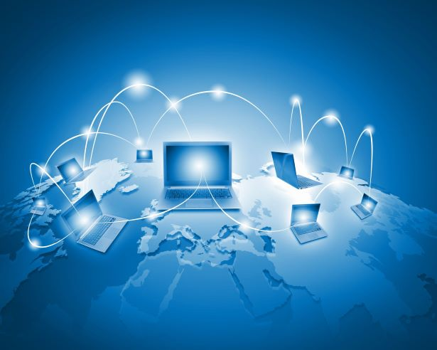
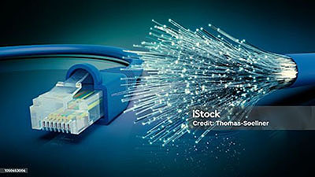
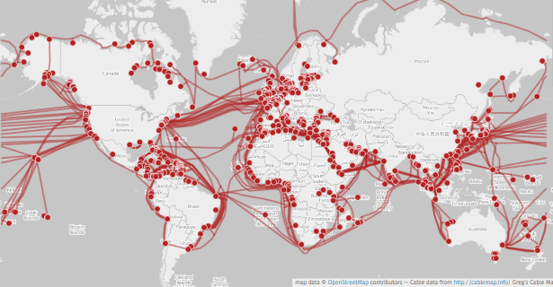
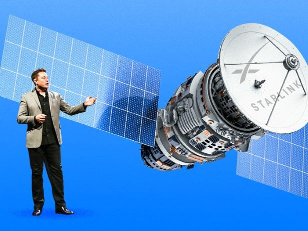

Internet
The internet is the world largest network. A network is a collection of computers, devices, or systems that are interconnected to share resources, information, or services. These connections can be established using various technologies such as router, wi-fi, or cellular networks. In a network, each device, often referred to as a node, can communicate with other devices within the network. This communication can involve sharing data, accessing shared resources like printers or files, or collaborating on tasks. Network can vary in size and complexity, ranging from small local network within a single home or office to vast global network like the internet.
Understanding the IP Suite: The Foundation of Internet Communication
The Internet Protocol (IP) suite is the backbone of how data travels across the internet, providing a standard for addressing and routing packets of data so they can move seamlessly from one network to another. It’s what makes global communication possible, allowing billions of devices to connect and exchange information. At its core, the IP suite consists of two main protocols: Internet Protocol (IP) and Transmission Control Protocol (TCP). Together, they ensure that data, whether it's an email, a website request, or a video stream, gets from its source to its destination. IP (Internet Protocol): IP is responsible for addressing and routing data packets. Every device on the internet has an IP address, which is like a mailing address for data. When you send data, IP breaks it down into smaller packets, attaches the destination’s IP address, and sends these packets on their way. The packets may travel through different routes, but IP ensures they reach the correct destination. TCP (Transmission Control Protocol): While IP handles the addresses, TCP ensures the data arrives intact. It establishes a connection between sender and receiver, checks for errors, and reassembles packets in the correct order. If any packets are lost or corrupted, TCP requests them to be resent, ensuring reliable data transmission. This combination, called TCP/IP, is the foundation of internet communication, powering everything from web browsing to video conferencing. While there are other protocols in the suite, these two are the most critical in ensuring data can move across different networks, making the internet a globally interconnected system.
The Backbone of the Internet: Fiber Optic Cables and Submarine Connections
- 
- 
Have you ever wondered what powers up the Internet? The internet might seem like a magical, invisible force, but it's powered by very tangible infrastructure—fiber optic cables, many of which lie deep beneath our oceans. These cables form the physical backbone of global connectivity, allowing us to send data between continents at incredible speeds. Fiber optic cables use light to transmit data over long distances. These thin strands of glass or plastic carry signals that can travel at near light speed, making them ideal for high-speed internet connections. Their capacity to handle massive amounts of data ensures that global communications, streaming services, and other internet activities run smoothly. What makes fiber optic cables especially critical is their role in connecting continents and countries through submarine cables. Submarine cables are a type of fiber optic cable designed specifically to carry data across oceans and seas. Submarine cables are the unsung heroes of global internet infrastructure. Running across the ocean floor, these cables physically connect countries and continents, forming a web of communication links. Currently, there are more than 400 active submarine cables, stretching over 1.2 million kilometers (over 745,000 miles). These cables are carefully laid by specialized ships, and though they are durable, they can occasionally be damaged by underwater currents, marine life, or ship anchors, requiring repairs. Thanks to this infrastructure, when you send an email from New York to London, your data zips through fiber optic cables across oceans in mere milliseconds. Fiber optics and submarine cables have revolutionized global connectivity, playing a crucial role in powering the modern digital world.
Satellites
- 
Satellites are also part of the global Internet infrastructure, but they play a different role compared to fiber optic and submarine cables. Satellites are used primarily for Internet access in remote or hard-to-reach areas where laying cables is not feasible, such as rural regions, mountains, deserts, or even ships and planes in transit. Traditional satellites orbit thousands of kilometers above the Earth and provide slower internet speeds with higher latency (delay), due to the time it takes for signals to travel back and forth between the satellite and the ground. However, in recent years, companies like SpaceX (with Starlink), Amazon (with Project Kuiper), and OneWeb are deploying low Earth orbit (LEO) satellites, which are much closer to the Earth’s surface. These LEO satellites provide faster internet with lower latency and are designed to deliver global coverage, making satellite-based internet a more viable option for mainstream use.
The Web

A document on the Web is called Web page and is identified by a unique address called Uniform Resource Locator, or URL. A URL is also commonly referred to as a Web address. A URL is a type of Uniform Resource Identifier (URI), which is a generic term for many types of name and addresses on the World Wide Web. The term Web site refers to the location on the Internet of the Web pages and related files (such as graphic files) that belong to a company, organization, or individual. You display a Web page on your computer screen using a program called a Web browser either by entering a URL in the Web browser's address box or by clicking a hypertext link. The Web started out as a read-only Web which was referred to as Web 1. Website were like static and unchanging, it was used for consuming contents then came Web 2 the read-write Web, this was the age of social media, blogs and cat videos. Suddenly you weren't just a consumer, you were a creator using Facebook, Instagram and Youtube to post content. Along the line this big tech companies are selling our data to the highest bidder. If you ain't paying for a service then you're the product. Web 1 and 2 works on the cilent-server architecture. Here comes Web 3 the newest version of the Web, the read-write-own Web (Decentralized Internet) where you have control over your data, your identity and digital assets. Web 3 is built on the blockchain technology, give it as a digital ledger where everyone can see but no one can alter, it is decentralized which means no single entity has control.